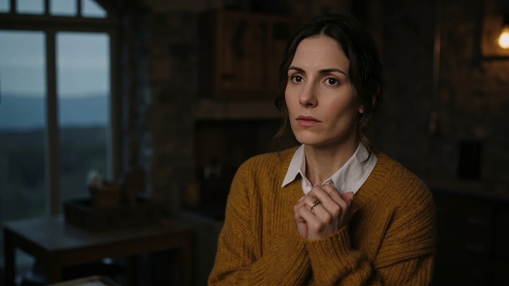
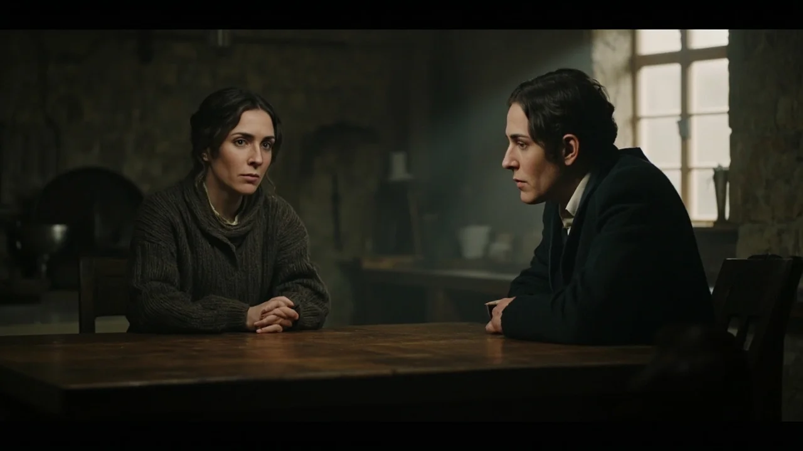
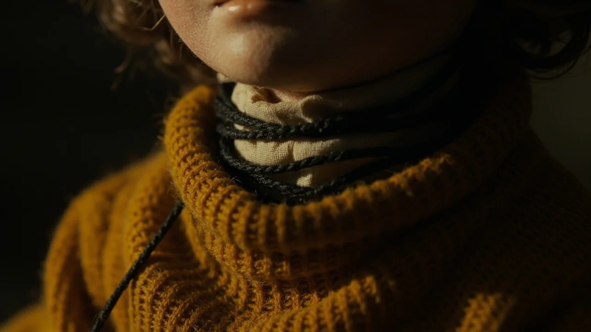
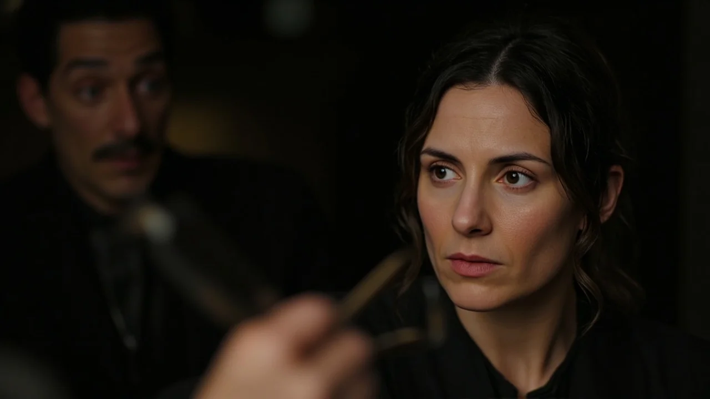
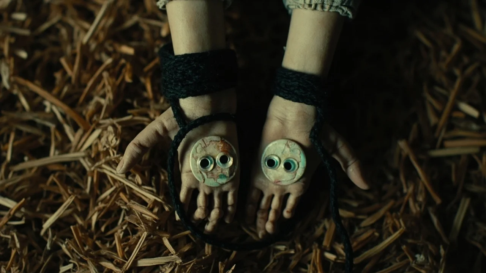

El viento del norte barría las hojas secas contra la fachada de piedra cuando la furgoneta terminó de descargar en la corraliza de La Solana. La casona, deshabitada durante cuatro décadas, conservaba el aroma espeso del roble húmedo y la cal apagada. Clara Morales dejó sobre la mesa de la cocina su caja de herramientas de restauración y se frotó las muñecas ateridas. A través de la ventana, el valle de Valdelobos se teñía con la luz plomiza del atardecer.
—Las vigas del desván aguantarán el invierno —dijo Mateo sacudiéndose el serrín de los guantes—. Pero habrá que cambiar tejas antes de que empiecen las heladas.
Unos nudillos secos golpearon el portón entreabierto. En el umbral aguardaba Elvira Sanchís, la vecina del caserío bajo. Llevaba una toquilla de lana gris sobre el pecho y sostenía un arcón alargado de madera de peral.
—Buenas tardes tengan —saludó la anciana sin franquear el paso—. Vi el humo y supe que los sobrinos de don Anselmo habían llegado. Vengo a entregarles esto. Apareció en el desván de mi madre hace cuarenta años, cuando tapiaron la planta alta de esta casona. Pertenecen aquí.
Elvira depositó la caja sobre la mesa y dio un paso atrás. Clara levantó el cierre de latón. En el interior, sobre virutas de papel de estraza, descansaban tres figuras de trapo de unos treinta centímetros. Estaban confeccionadas con paños viejos, estambre y costuras de cáñamo. No tenían facciones bordadas, solo dos botones planos de nácar por ojos y puntadas horizontales en el lino que simulaban bocas selladas.
Lo inquietante eran sus ropas. La primera figura lucía un jubón tejido en lana teñida de un tono ocre idéntico al jersey de Clara. El segundo muñeco vestía una camisa en miniatura a cuadros verdes y negros, con el mismo paño de franela que la camisa de Mateo. La tercera figura, encorvada y con un pequeño pañuelo gris, semejaba una mujer anciana.
—Son los Armenteros —susurró Elvira—. Los que levantaron este caserío. Mi madre decía que los cosieron antes del invierno del cincuenta y cuatro, poco antes de que la casa amaneciera vacía. Nadie los vio marcharse. Dejaron el puchero en el fuego y las puertas abiertas de par en par. No los separéis.
La anciana dio media vuelta y descendió por el camino de grava sin despedirse.
Aquella noche, Clara colocó los tres muñecos en la hornacina de piedra del vestíbulo, junto al reloj de péndulo.

A las siete de la mañana, al bajar a la cocina, se detuvo frente al hueco del muro. Las figuras habían cambiado de posición. La muñeca del jubón ocre, que la noche anterior miraba de frente al pasillo, yacía ahora girada hacia el portón exterior, con los brazos de estambre extendidos hacia la cerradura. El muñeco de cuadros verdes aparecía sentado de espaldas, con la cabeza ladeada hacia el suelo de losas.
—Mateo, ¿has movido tú esto? —preguntó mientras su hermano bajaba abrochándose el chaleco.
—Ni los he tocado. Estuve desde temprano revisando las tuberías del sótano. Será alguna corriente.
Clara no insistió. Volvió a alinear los muñecos, pero al tocar la tela del muñeco de cuadros, notó una rigidez anómala en el relleno: no era paja ni lana blanda, sino una tensión dura, como tendones secos tirando de los miembros.
A mediodía, una pesadez densa invadió la vivienda. Sin motivo aparente, una discusión agria estalló entre ambos. Mateo alzó la voz reprochando a Clara haber elegido una propiedad ruinosa que devoraría sus ahorros. Clara sintió subir por su garganta una cólera venenosa, ajena a su carácter, pronunciando palabras hirientes que jamás había pensado. Sus mandíbulas se sentían entumecidas, como si una fuerza invisible le forzara la boca.
La disputa cesó de golpe cuando Mateo guardó silencio, pálido, presionándose la sien derecha.
—No sé por qué te he dicho eso —murmuró, respirando con dificultad—. Siento una pesadez horrible en los hombros. Como si llevara plomo a cuestas.
Al cruzar el vestíbulo, Clara miró la hornacina. Los muñecos volvían a estar alterados: la figura masculina tenía ahora las manos de trapo aferradas a los lados de su cabeza, mientras que la muñeca del jersey ocre aparecía con el torso inclinado hacia adelante, señalando hacia el comedor.
El accidente ocurrió a primera hora de la tarde. Mateo había subido a la escalera de tijera para fijar una viga que presentaba holgura. Clara clasificaba clavos cuando un chasquido seco precedió a un golpe sordo contra el suelo.

La escalera yacía partida. Mateo estaba tendido boca arriba, apretando los dientes para contener el dolor. Su brazo derecho colgaba hacia un lado en un ángulo forzado, rígido como una rama seca.
—No ha cedido el peldaño —gimió Mateo con sudor frío en la frente—. Se me ha quedado el brazo completamente agarrotado en el aire. No respondía... ha sido como si me clavaran una estaca desde el hombro hasta los dedos.
Clara lo ayudó a incorporarse y le inmovilizó la articulación con tablillas y vendas. Al pasar por la hornacina, se detuvo con el corazón en un puño.
El muñeco de franela verde tenía el brazo derecho retorcido hacia atrás, cosido a la espalda con varias vueltas de un hilo negro y espeso que no estaba allí por la mañana. Las puntadas eran recientes, tirando de la tela hasta deformar el hombro de trapo.
Dominada por el espanto, Clara metió los tres muñecos en el arcón de peral y salió a la corraliza. Los arrojó al fondo del bidón metálico de desescombro, roció la madera con aguarrás y prendió fuego. Las llamas envolvieron la caja con furia hasta reducirla a un montón de cenizas grises.
Regresó adentro, atrancó el portón y se sentó junto a su hermano. Por primera vez en horas, Mateo respiraba aliviado.
Cerca de las once de la noche, un roce sutil de telas pesadas resonó en el piso superior. Clara subió con la linterna. En la mesa del descansillo volvían a estar los tres muñecos de trapo, intactos, sin una sola mota de hollín.
Estaban dispuestos en círculo alrededor de un candelero apagado. La figura de cuadros conservaba su brazo derecho cosido hacia atrás. La muñeca del jubón ocre presentaba ahora una hilera de puntadas prietas alrededor del cuello, tan apretadas que el lino crudo comenzaba a deformarse como si un nudo invisible la estrangulara.
En ese instante, Clara sintió una punzada de asfixia en la laringe. Un ardor seco le cortó el aliento, obligándola a apoyarse en la barandilla para no caer de rodillas.

Clara bajó al salón tosiendo con dificultad, con las manos apretadas contra su propia garganta. La piel estaba lisa, pero el aire apenas pasaba.
—Mateo, levántate —jadeó tirando de su hermano—. Nos vamos ahora mismo.
—No puedo mover las piernas —respondió él con la voz pastosa—. Están como dormidas... me pesan los párpados.
Clara corrió hacia el aparador, donde guardaba la carpeta con las escrituras viejas de la finca. Rebuscó hasta dar con un sobre manchado de humedad: Expediente municipal de Valdelobos, 1954.
Dentro había un recorte de prensa y un informe manuscrito del médico de guardia:
«La desaparición de los hermanos Armenteros y su tía continúa siendo un enigma. No se aprecian signos de violencia en La Solana. Los vecinos afirman que durante las semanas previas sufrieron una rigidez progresiva que les impedía hablar y desplazarse. En el registro no se hallaron restos. Sobre las sillas del comedor únicamente descansaban sus mudas completas de ropa, dobladas con primor, como si los cuerpos se hubieran disuelto dejando intactas las vestiduras.»
Al pie del folio, una anotación del párroco añadía: «No son figuras de recuerdo. Son moldes de succión. La casa no admite moradores sin vaciarlos primero.»
Unos pasos descalzos resonaron en el zaguán. El portón cerrado por dentro se abrió sin ruido y Elvira cruzó el umbral. Caminaba como una sonámbula, con los brazos inertes y la mirada perdida en la penumbra.
—Ya vienen a ocupar la mesa —dijo la anciana con una voz que parecía brotar de las tablas del suelo—. Siempre hacen lo mismo cuando las hojas caen.
Elvira se sentó rígida en una banqueta frente a Mateo, que permanecía paralizado, con los ojos vidriosos. En el centro de la mesa, los tres muñecos de trapo los observaban con sus botones ciegos de nácar. El hilo negro del cuello de la muñeca ocre se tensaba más con cada segundo. Clara se ahogaba; una soga invisible le trituraba la tráquea.

Clara comprendió el horror: los muñecos no eran efigies que actuaban por su cuenta, sino receptáculos que absorbían la vitalidad de los moradores para atraparlos en el caserío. Destruirlos no servía de nada mientras las costuras imitaran sus cuerpos y sus ropas.
Haciendo acopio de sus últimas fuerzas, Clara se arrastró hasta la caja de costura del aparador. Con los dedos entumecidos, aferró unas tijeras de sastre pesadas y afiladas.
Avanzó tambaleándose hacia la mesa. Mateo intentó articular palabra, pero de su boca solo brotó un silbido agónico.
Clara no intentó quemar la figura. Con pulso firme, introdujo la punta de las tijeras bajo el hilo negro que ceñía el cuello de la muñeca ocre y apretó con determinación.
El hilo de cáñamo se partió con un chasquido semejante a una cuerda rota.
El aire entró de golpe en los pulmones de Clara, haciéndola arquearse sobre la mesa. Sin perder un instante, tomó el muñeco de franela verde. Deslizó las hojas metálicas bajo las costuras que ataban el brazo derecho a la espalda y cortó cada una de las vueltas de hilo negro, liberando la extremidad de paño.
Un quejido profundo escapó de la garganta de Mateo. El joven parpadeó con fuerza, sacudió los hombros y flexionó los dedos de la mano derecha, respirando hondo mientras el color regresaba a su rostro.
Por último, Clara cortó las puntadas que unían las manos de la muñeca anciana. Elvira parpadeó aturdida, miró sus pies descalzos y se llevó las manos al pecho, como si despertara de una larga pesadilla.
—¡Al fuego de la chimenea! —gritó Clara, notando que el suelo vibraba con un temblor sordo—. ¡Ahora que los hilos están deshechos!

Mateo arrojó los tres muñecos descosidos a las brasas de roble de la chimenea. Esta vez el fuego los devoró en el acto. Una humareda azulada con olor a lino rancio y hollín ascendió por la campana, acompañada de un suspiro que se perdió en la noche.
Salieron a la corraliza bajo la lluvia helada. Mateo arrancó la furgoneta sin mirar atrás y huyeron del valle para siempre.
Pasaron tres años antes de que el recuerdo de Valdelobos dejara de poblar las pesadillas de Clara.
Ahora vivían en Oviedo, en un piso luminoso frente a una plaza arbolada. Mateo dirigía su propio estudio de arquitectura y Clara restauraba documentos antiguos en el archivo de la ciudad. Jamás hablaron de La Solana; la finca había sido derribada por una maderera para aprovechar la piedra.
Una tarde de finales de octubre, sonó el timbre de la vivienda. Clara abrió y encontró en el felpudo un paquete rectangular envuelto en papel de estraza, atado con cordel de cáñamo. No tenía remite ni sello, solo su nombre escrito con tinta negra.
Clara llevó la caja a la cocina y cortó la cuerda.
En el interior, sobre virutas de cedro seco, descansaban dos nuevas figuras de trapo cosidas a mano.
La primera llevaba un cárdigan gris perla y un pequeño aro plateado cosido en el dedo anular de la mano izquierda, idéntico al anillo que Clara lucía en ese instante. La segunda figura vestía una cazadora azul marino con cremallera en miniatura, exactamente igual a la chaqueta que Mateo acababa de colgar en el recibidor.
Las dos figuras tenían sus botones de nácar vueltos hacia arriba, mirándola fijamente desde el fondo de la caja, mientras dos hilos negros recién anudados comenzaban a ceñir sus diminutas muñecas.